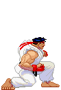
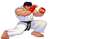
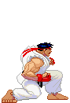
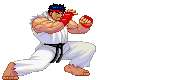
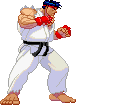
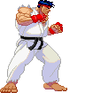

Ryu (Street Fighter)
Ryu (Street Fighter)
All-rounders are the most balanced fighters. They don’t have any obvious strengths or weaknesses. That means they have a balanced defense to offense skill, high/low attacks, damage dealt/taken etc. One type of all-rounder fighter is called the Shoto. Named after Ryu and Ken from Street Fighter, this type of all-rounder usually has three significant moves. A fireball, an upwards kick, and a spinning kick that launches them forward. Although not every all-rounder is a Shoto, their attacks are still based on these same fundamentals.
Toolkit


- Mid range projectile
- Rising attack
- A move that sends then forwards
- Average health pool
- Medium walk and moving speed
Pros
 



- Versatility
- No glaring weaknesses
- Easy to understand
Cons
- Can be a jack of all trades, master of none
- No specific game plan to target opponent’s weaknesses
How should I play as this fighter?

 

Being a balanced fighter makes all-rounders extremely versatile. Their balanced move set allows them to control the game at any position on screen. Get to know the move set and try out how they match-up against different archetypes.
How can I beat this fighter?

Being balanced means that all-rounders don’t excel in a particular area. Utilize the strengths of your fighter, especially at moments where the all-rounder’s balanced nature limits them from achieving the same output as you in a certain area.
Examples:
- Ryu (Street Fighter, 1987)
- Ken Masters (Street Fighter, 1987)
- Jin Kazama (Tekken 3, 1997)
Evelynn's Notes
Difficulty: ★ ☆ ☆ ☆ ☆All-rounders are usually the most beginner-friendly option on the roster. Their moves are straightforward and gameplay easy to understand since they don’t have special gimmicks or weaknesses. This is a great option for first time players to learn the fundamentals.